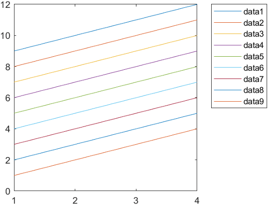
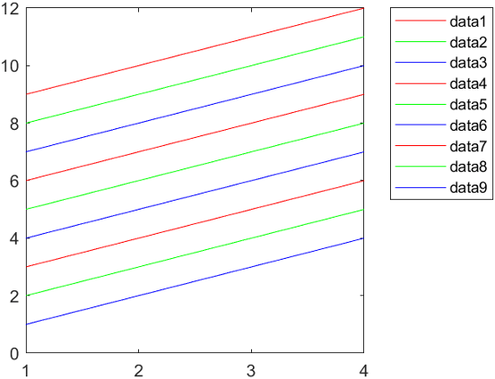
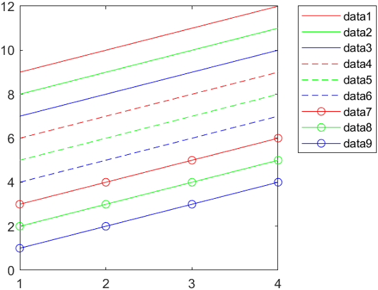
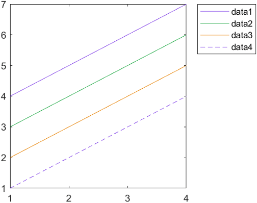
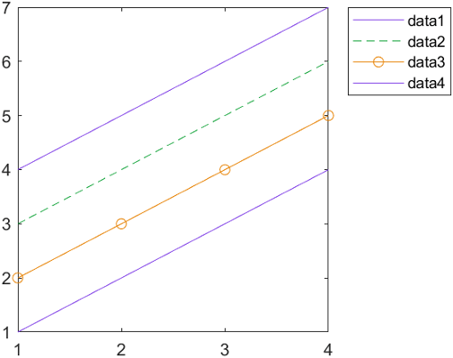
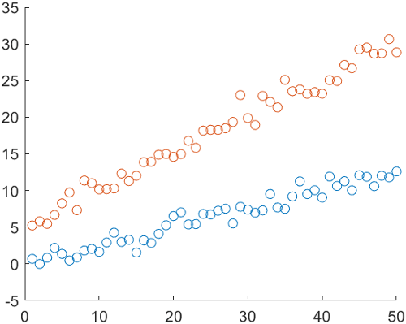
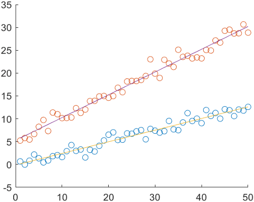
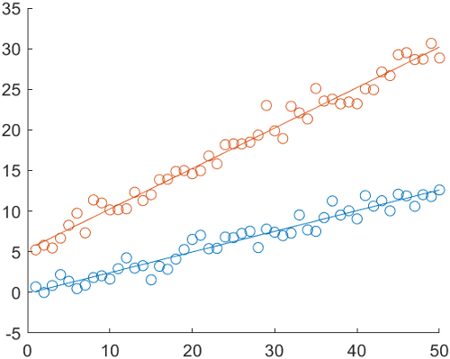
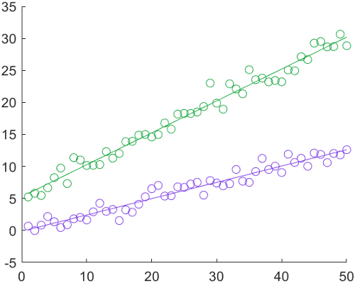

Control Automatic Selection of Colors and Line Styles in Plots
When you plot multiple data sets together in the same axes, MATLAB® helps you to distinguish your data sets by varying their appearance. For example, when you plot multiple lines, MATLAB assigns each line a color from a set of colors according to their order of creation. If you create more lines than there are colors, MATLAB repeats the cycle of colors starting with the first color. You can change this behavior:
Specify different sets of colors and line styles — Create your own set of colors or line styles to further distinguish your data.
Specify the cycling order of colors and line styles — Specify whether to cycle through all line styles before, after, or at the same time as the colors.
Group your data by color or line style — Group related items together visually. For example, when plotting multiple sets of scattered points, you can associate each set of points with a fit line of the same color.
This topic demonstrates how to configure line and scatter plots, but the same concepts
for controlling the cycling of colors (and possibly line styles) apply to many other
plots, including bar, area, and stem plots. All of the examples in this
topic set the axes properties after plotting. This sequence of
steps is important, because most plotting functions reset many of the axes
properties.
Note
If you want to specify a color or a line style for a specific item in a plot, see Specify Plot Colors and Specify Line and Marker Appearance in Plots.
Specify Different Sets of Colors and Line Styles
The colors MATLAB selects come from the axes ColorOrder property,
which contains a three-column matrix of colors specified as RGB triplets. An RGB
triplet is three-element vector containing the intensities of the red, green, and
blue components of a color. The intensities must be in the range [0, 1].
If you plot multiple lines, the first line uses the first color in the
ColorOrder matrix, the second line uses the second color,
and so on. Eventually, the colors repeat if the plot has more lines than rows in the
matrix. This code creates several line plots that use the default color order. The
first line is the top-most line. Because the default ColorOrder
matrix has seven rows, the colors repeat after the seventh line.
plot([9 10 11 12]) hold on plot([8 9 10 11]) plot([7 8 9 10]) plot([6 7 8 9]) plot([5 6 7 8]) plot([4 5 6 7]) plot([3 4 5 6]) plot([2 3 4 5]) plot([1 2 3 4]) hold off legend("Location","northeastoutside")

You can change the colors in either of two ways:
Set the
ColorOrderproperty of the axes to a new matrix of RGB triplets.Call the
colororderfunction. This function accepts RGB triplets, color names, such as"red", and hexadecimal color codes. It also accepts any of several predefined palette names, such as"gem","reef"or"meadow"(since R2023b).
Create a new matrix containing the RGB triplets for red, green, and blue. Then set
the ColorOrder property to that matrix. The plot updates
immediately with the new colors.
mycolors = [1 0 0; 0 1 0; 0 0 1]; ax = gca; ax.ColorOrder = mycolors;

MATLAB also cycles through different line styles in addition to colors. By
default, there is only one line style (a solid line). To specify additional line
styles, set the LineStyleOrder
property of the axes. For example, this code specifies three line styles. The
updated plot cycles through all the colors with one line style before displaying the
next line style.
mylinestyles = ["-"; "--"; "-o"]; ax.LineStyleOrder = mylinestyles;

Specify Cycling Order of Colors and Line Styles
Since R2023a
When you use multiple colors and line styles, you can specify whether the plot
cycles through all line styles before, after, or at the same time as the colors by
setting the LineStyleCyclingMethod property. This property can have one of three values:
"aftercolor"— Cycle through the line styles after the colors. This value is the default."beforecolor"— Cycle through the line styles before the colors."withcolor"— Cycle through the line styles with the colors.
Plot four lines. Set the LineStyleOrder property to three
line styles, and set the ColorOrder property to three colors by
passing an array of three hexadecimal color codes to the
colororder function. Then add a legend.
% Plot four lines plot([4 5 6 7]) hold on plot([3 4 5 6]) plot([2 3 4 5]) plot([1 2 3 4]) hold off % Set the line style order and color order ax = gca; ax.LineStyleOrder = ["-"; "--"; "-o"]; colororder(["#8040E6";"#1AA640";"#E68000"]) legend("Location","northeastoutside")

By default, the plot cycles through all the colors with the first (solid) line style before it displays the next (dashed) line style. Because there are three colors, only two of the line styles are used in the four-line plot.
If you want more of your lines to be distinct in both color and line style, use
the "withcolor" option and specify an equal number of colors and
line styles. For example, change the LineStyleCylingMethod of
the preceding plot to "withcolor". The updated plot cycles
through the colors and the line styles at the same time.
ax.LineStyleCyclingMethod = "withcolor";
Group Your Data by Color or Line Style
To group related lines (or other plot objects) together visually, set the
SeriesIndex property of each object that you want to receive the
same visual treatment to the same number. The SeriesIndex
property indexes into the ColorOrder and
LineStyleOrder arrays according to the value of
the LineStyleCyclingMethod property. Thus, different objects
with the same SeriesIndex value use the same color (and line
style, if applicable).
For example, plot two sets of 50 scattered points.
x = 1:50;
meas1 = 0.25*x + randn(1,50);
scat1 = scatter(x,meas1);
hold on
meas2 = 0.5*x + randn(1,50) + 5;
scat2 = scatter(x,meas2);
Calculate a fit line for each set of points using the polyfit
and polyval functions. Then add each fit line to the
plot.
% Calculate fit lines for each set of measurements p1 = polyfit(x,meas1,1); y1_fit = polyval(p1,x); p2 = polyfit(x,meas2,1); y2_fit = polyval(p2,x); % Plot fit lines fitline1 = plot(x,y1_fit); fitline2 = plot(x,y2_fit); hold off

The scatter plots and fit lines are all different colors. The reason is that
MATLAB selects a new color from the ColorOrder matrix
for each new plot you add to the axes.
Match the color of each fit line with its associated scatter plot. Set the
SeriesIndex property of each line to the same value that
the associated scatter plot has.
fitline1.SeriesIndex = scat1.SeriesIndex; fitline2.SeriesIndex = scat2.SeriesIndex;

This relationship persists even if you change the colors in the
ColorOrder matrix. For example, change the colors to purple
and green by calling the colororder function.
colororder([0.5 0.25 0.90; 0.10 0.65 0.25])

See Also
Functions
plot|scatter|gca|colororder|validatecolor